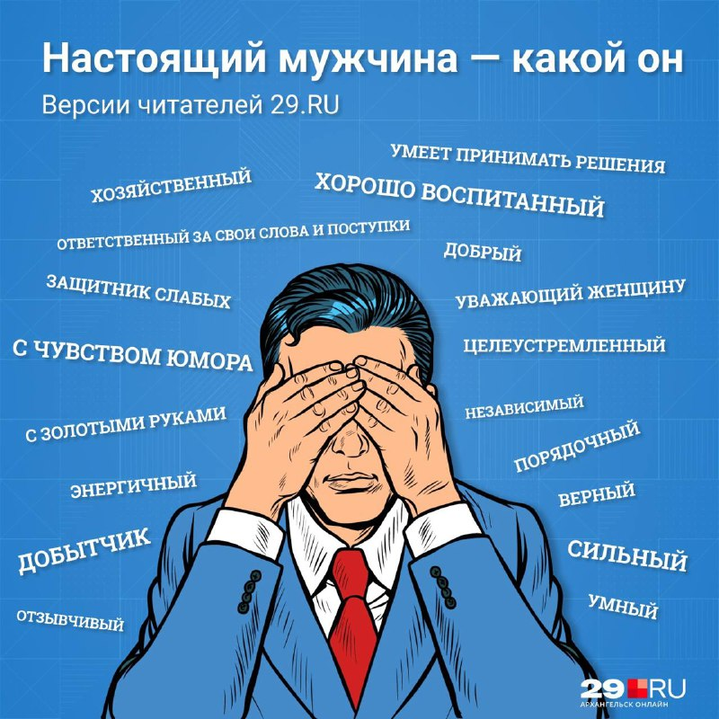

Барча эркакларга бағишланади

Сизни 23 февраль тарихий эркаклар куни билан чин қалбимдан табриклайман.
Биламан, ҳаётда ҳар бирингиз учун ва ҳозир балки кимдир учун қийин вазият бўлиши мумкин. Эр киши доимо қийинчиликлар билан курашишингиз ва ҳар куни уларни енгишингиз керак.
Бизнесда, ходимлар билан, мижозлар билан, уйда, ишда, шахсий ҳаётда.
Ва шу шароитда шу пайтни ўзида эркак деган номни сақлаши керак!
Аминманки, кўпчилигингтз, эҳтимол барчангиз ҳам ҳар биримиз бошдан кечираётган дард, ички кечинмалар ва муаммолар ҳақида устимизда гаплашмаймиз ва шикоят қилмаймиз.
Эркак кишига кўз ёш, заифликни ифодалаш, қатъиятсизлик, беқарордик ва хис туйғулар ифодаси ижтимоий теккисликда ёт нарса. Бу дегани эркаклар хиссиз ва совуқ, ички дунёси қоронғу дегани эмас, асло.
Ушбу табрик ҳозирда ўзини ички курашини бошдан кечираётган ва қийинчиликларга дош бераётган ҳар бир эркак киши учун қўллаб-қувватлаш далдаси бўлсин.
Сиз ёлғиз эмаслигингизни унутманг.
Мен ҳар бирингизга эркаклик кучингизни ўзингизда сақлашингизни тилайман. Хеч қачон таслим бўлманг ва орзуларингиз сари интилинг!
Азиз биррдарлар, қилаётган ишларингиз, бизнесингиз, саъй-ҳаракатларингиз ва эркак номини сақлаганингиз учун ташаккур!
Эркак деган номни ғурур билан охирги нафасгача химоя қилиш, Аллоҳ розилигини топиш насиб этсин!
❤️ Umid Hudoyberdiev 🙂
🕊 Яқинларга улашинг